TEMARIO - OBJETIVO
UNIDAD 6. DISEÑOS ORGANIZACIONALES
6.1 Diseño contemporáneo para la competencia global
6.2 Diseño organizacional en México
6.3 Programa de implementación
6.4 Nuevos diseños organizacionales: reingeniería, benchmarking, outsourcing, downsizing y redes de trabajo
Esta unidad cambia un poco el enfoque. Ya vimos estructura, procesos, organigramas y manuales; ahora analizaremos cómo las organizaciones adaptan su diseño para responder a cambios del entorno, la tecnología y la competencia.
Objetivo
Analizar los diseños organizacionales contemporáneos y su aplicación ante los cambios del entorno, identificando alternativas que permitan a las organizaciones adaptarse, mejorar sus procesos y responder a las nuevas condiciones de competencia.
Una estructura organizacional no debe permanecer igual cuando las condiciones cambian.
ENTORNO CAMBIA → ORGANIZACIÓN SE ADAPTA → REDISEÑA → IMPLEMENTA → EVALÚA → MEJORA
El alumno debe comprender que el diseño organizacional no consiste únicamente en dibujar una estructura, sino en decidir cómo organizar personas, procesos, tecnología y relaciones de trabajo para responder a las necesidades actuales.
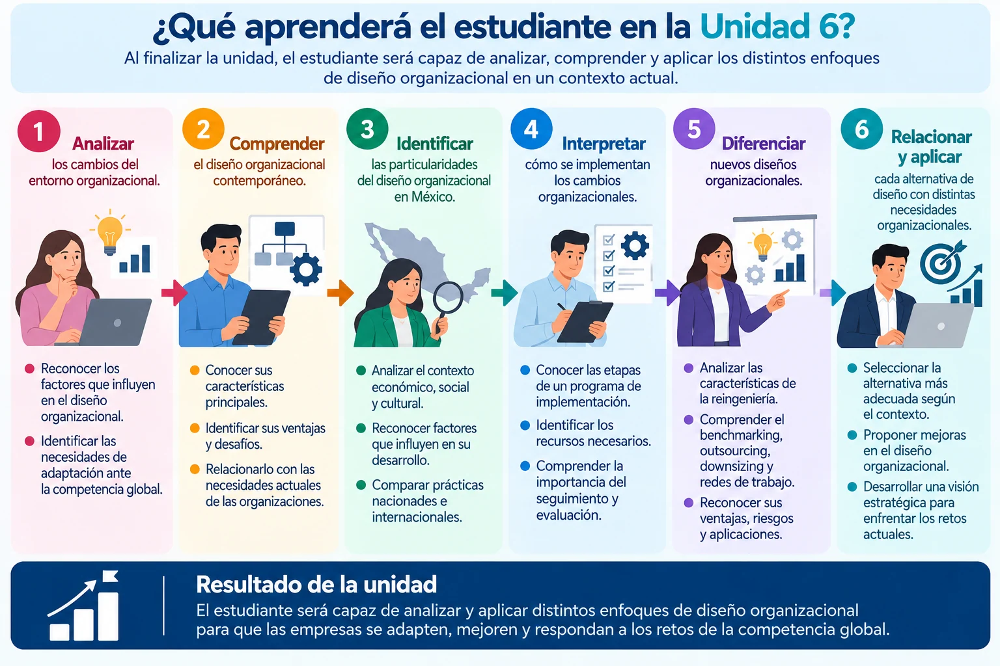
La organización frente al cambio
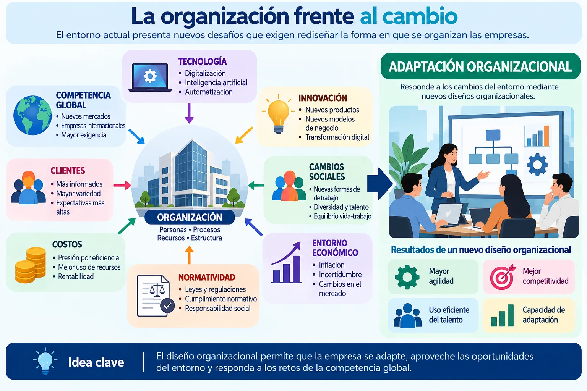
6.1 Diseño contemporáneo para la competencia global
6.1 Diseño contemporáneo para la competencia global
El diseño organizacional contemporáneo busca crear organizaciones capaces de adaptarse con rapidez, coordinar recursos y responder a mercados que cambian constantemente.
A diferencia de estructuras muy rígidas, las organizaciones actuales tienden a buscar mayor flexibilidad y conexión entre sus áreas.
¿Qué caracteriza a una organización contemporánea?
Destacan cinco características:
FLEXIBILIDAD — capacidad para modificar estructuras y formas de trabajo.
COLABORACIÓN — mayor coordinación entre personas, equipos y áreas.
TECNOLOGÍA — utilización de herramientas digitales para conectar información y procesos.
DESCENTRALIZACIÓN — algunas decisiones se acercan a las personas y equipos que poseen la información necesaria.
ORIENTACIÓN AL CLIENTE — los procesos se organizan considerando las necesidades y expectativas del mercado.
Esto no significa que todas las empresas deban eliminar jerarquías. El diseño depende de su estrategia, tamaño, actividades y entorno.
De estructuras rígidas a estructuras más flexibles
Una organización tradicional puede funcionar mediante departamentos muy definidos y decisiones concentradas en los niveles superiores.
En cambio, un diseño contemporáneo puede incorporar:
EQUIPOS DE TRABAJO → PROCESOS TRANSVERSALES → TECNOLOGÍA → COLABORACIÓN ENTRE ÁREAS → DECISIONES MÁS ÁGILES
El objetivo no es cambiar por moda, sino conseguir que la estructura facilite el funcionamiento de la organización.
¿Qué significa competir globalmente?
Una empresa no necesita tener oficinas en varios países para enfrentarse a la competencia global.
Actualmente puede competir con empresas nacionales e internacionales por medio de mercados digitales, cadenas de suministro, tecnología, proveedores y clientes conectados globalmente.
Por eso, el diseño organizacional necesita facilitar:
ADAPTACIÓN + COORDINACIÓN + INNOVACIÓN + VELOCIDAD DE RESPUESTA
La estructura debe apoyar la estrategia de la organización y permitirle responder a los cambios del entorno.
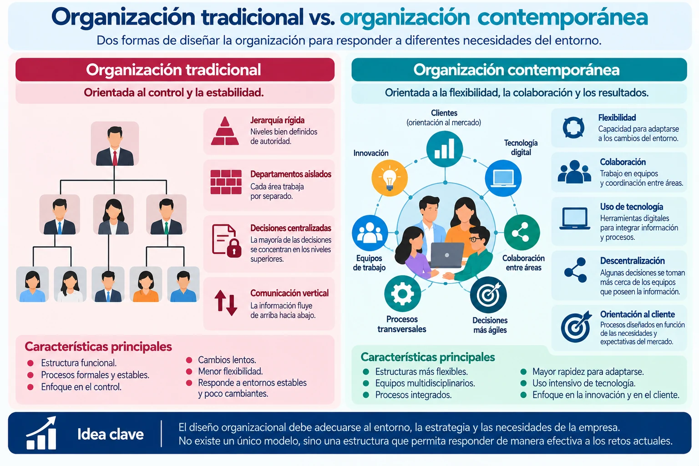
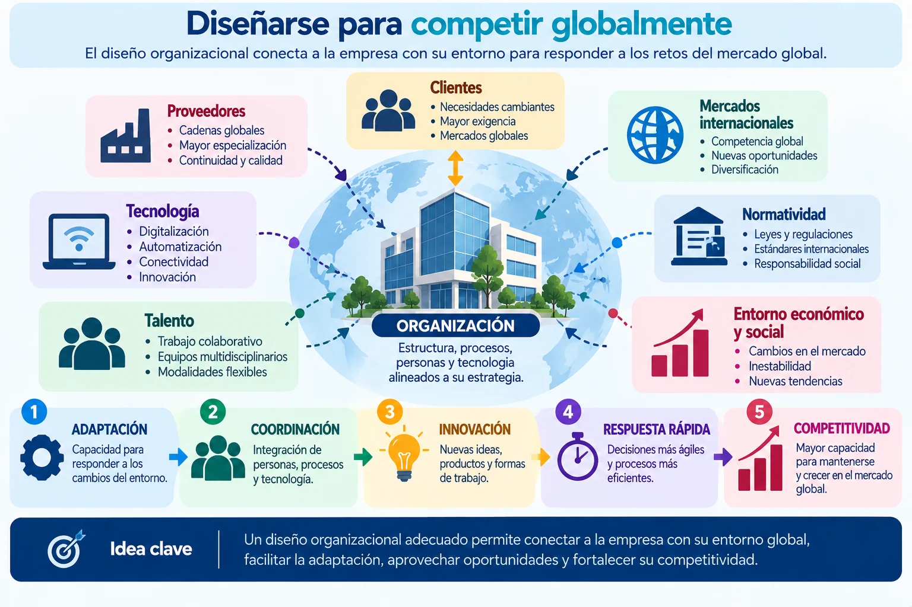
6.2 Diseño organizacional en México
6.2 Diseño organizacional en México
El diseño organizacional en México se desarrolla dentro de un entorno particular, pero no existe un único modelo de organización mexicana.
Una microempresa familiar, una empresa industrial, una institución pública o una compañía multinacional instalada en México pueden tener estructuras completamente diferentes.
Por ello, el diseño debe responder a factores como:
TAMAÑO – SECTOR – TECNOLOGÍA – ESTRATEGIA – CULTURA ORGANIZACIONAL – RECURSOS – NORMATIVIDAD – MERCADO
Diferentes organizaciones, diferentes estructuras
Por ejemplo:
Una micro o pequeña empresa puede tener pocos niveles jerárquicos y una misma persona asumir varias funciones.
Una empresa en crecimiento puede necesitar crear departamentos, definir puestos y formalizar procedimientos.
Una empresa industrial puede requerir mayor especialización, controles y coordinación entre producción, mantenimiento, calidad, logística y administración.
Una empresa multinacional puede combinar lineamientos corporativos globales con las necesidades de operación en México.
Esto nos lleva a una idea importante:
La estructura debe responder a las necesidades reales de cada organización y no copiarse automáticamente de otra empresa.
Formalización y crecimiento
Un aspecto que podemos analizar es qué sucede cuando una organización comienza a crecer.
Por ejemplo:
EMPRESA PEQUEÑA
Una persona puede encargarse de compras, pagos y administración.
⬇️ CRECIMIENTO
Aumentan trabajadores, clientes y operaciones.
⬇️
Surge la necesidad de:
DEFINIR ÁREAS → DELIMITAR RESPONSABILIDADES → ESTABLECER PROCEDIMIENTOS → COORDINAR → CONTROLAR
El diseño organizacional también debe evolucionar conforme cambia la empresa.
El reto: conservar agilidad sin perder organización
Formalizar no significa necesariamente crear más burocracia.
El propósito debe ser encontrar un equilibrio entre:
FLEXIBILIDAD + CLARIDAD + COORDINACIÓN + CONTROL
Una empresa con controles excesivos puede volverse lenta; pero una empresa sin funciones, responsabilidades o procedimientos claros también puede generar errores y duplicidades.
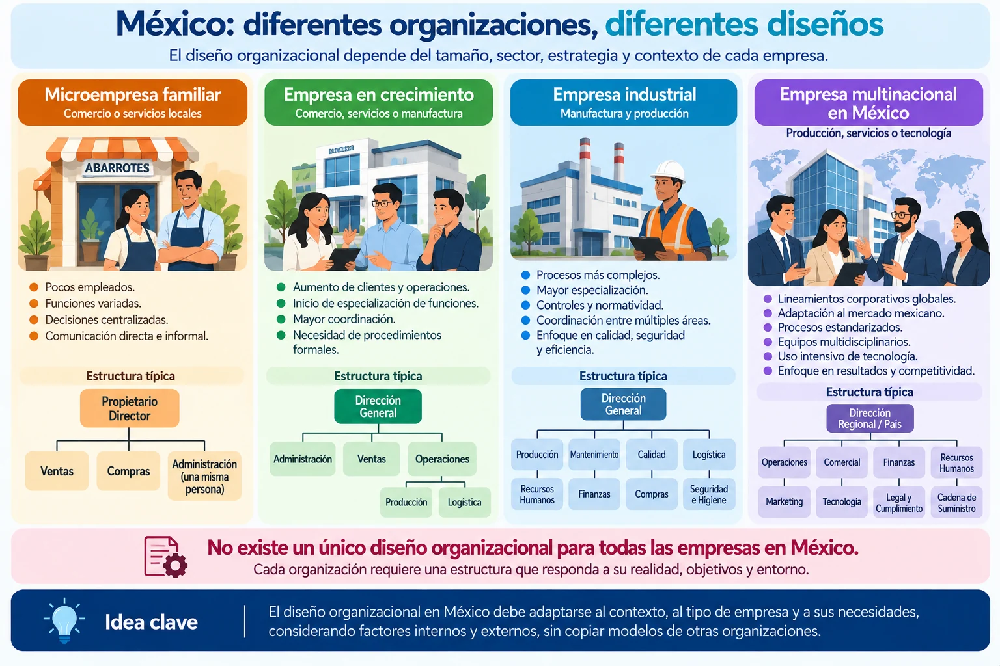
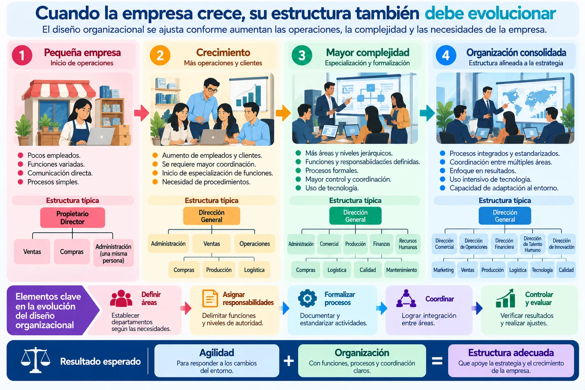
6.3 Programa de implementación
6.3 Programa de implementación
Un programa de implementación organiza las acciones necesarias para poner en funcionamiento un cambio organizacional.
No basta con diseñar una nueva estructura. Es necesario establecer qué se hará, quién participará, cuándo se realizará y cómo se evaluarán los resultados.
Del diseño a la realidad
Imaginemos que una empresa decide crear un Departamento de Recursos Humanos porque antes todas las actividades de personal dependían directamente de Administración.
La decisión por sí sola no produce el cambio.
Será necesario:
DEFINIR FUNCIONES → ASIGNAR RESPONSABLES → PROPORCIONAR RECURSOS → COMUNICAR EL CAMBIO → CAPACITAR → PONER EN MARCHA → EVALUAR
Ahí es donde interviene el programa de implementación.
¿Qué debe considerar?
Para organizar la implementación debemos establecer algunos elementos básicos:
Objetivo — ¿qué cambio queremos conseguir?
Actividades — ¿qué acciones deben realizarse?
Responsables — ¿quién ejecutará cada actividad?
Recursos — ¿qué personal, tecnología, presupuesto o materiales necesitamos?
Tiempo — ¿cuándo comienza y cuándo debe concluir?
Comunicación y capacitación — ¿qué necesitan conocer o aprender las personas involucradas?
Seguimiento — ¿cómo sabremos si el cambio está funcionando?
Implementar no significa cambiar todo de inmediato
Dependiendo de la magnitud del cambio, puede ser conveniente hacerlo por etapas.
Por ejemplo:
ETAPA 1 → Preparación
Definir el nuevo diseño y comunicarlo.
ETAPA 2 → Ejecución
Asignar funciones, recursos y responsabilidades.
ETAPA 3 → Seguimiento
Observar cómo está funcionando.
ETAPA 4 → Ajuste
Corregir problemas y realizar mejoras.
Así disminuye el riesgo de introducir un cambio sin saber cómo está funcionando.
La participación de las personas
Un diseño organizacional puede estar bien planteado técnicamente y aun así presentar dificultades durante su implementación.
Las personas necesitan comprender:
¿QUÉ VA A CAMBIAR? – ¿POR QUÉ? – ¿CUÁNDO? – ¿CÓMO ME AFECTA? – ¿QUÉ DEBO HACER?
Por eso, la comunicación y la capacitación forman parte del proceso de implementación.
Un cambio organizacional no termina cuando se diseña; termina cuando puede funcionar en la práctica y sus resultados son evaluados.
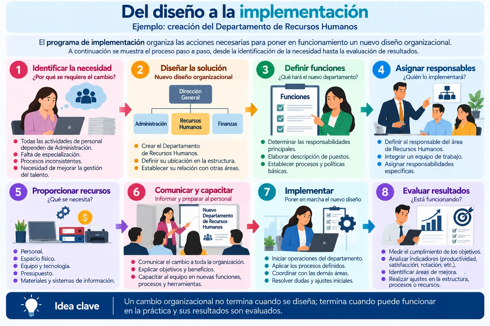
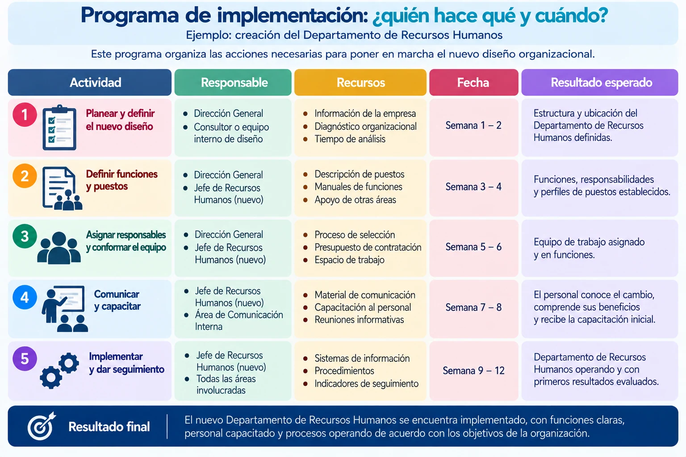
6.4 Nuevos diseños organizacionales
6.4 Nuevos diseños organizacionales
En este tema estudiaremos cinco enfoques que las organizaciones pueden utilizar para rediseñar procesos, aprender de otras organizaciones, apoyarse en especialistas externos, ajustar su estructura o trabajar mediante redes:
REINGENIERÍA – BENCHMARKING – OUTSOURCING – DOWNSIZING – REDES DE TRABAJO
no significan lo mismo ni persiguen exactamente el mismo propósito.
1. Reingeniería
La reingeniería consiste en replantear de manera profunda un proceso cuando realizar pequeños ajustes ya no es suficiente.
No se trata simplemente de corregir un paso, sino de preguntarnos:
¿Podríamos diseñar este proceso de una manera completamente diferente?
Ejemplo: una empresa tiene un proceso de autorización que pasa por siete personas y tarda diez días. En lugar de reducirlo a nueve días, analiza el proceso completo, elimina actividades innecesarias, utiliza tecnología y redefine responsabilidades.
PROCESO ACTUAL → CUESTIONAR → REDISEÑAR → IMPLEMENTAR → MEJORAR RESULTADOS
2. Benchmarking
El benchmarking consiste en comparar procesos, prácticas o resultados con referentes para identificar oportunidades de aprendizaje y mejora.
No significa copiar exactamente lo que hace otra organización.
El proceso sería:
COMPARAR → IDENTIFICAR BUENAS PRÁCTICAS → ANALIZAR → ADAPTAR → MEJORAR
Por ejemplo, una empresa puede estudiar cómo otras organizaciones reducen sus tiempos de atención y después adaptar algunas prácticas a sus propias necesidades.
3. Outsourcing
El outsourcing o externalización consiste en contratar a un proveedor externo para realizar determinadas actividades o servicios.
Por ejemplo:
seguridad, limpieza, mantenimiento, soporte tecnológico o determinados servicios especializados.
La organización debe analizar qué actividades conviene mantener internamente y cuáles pueden ser realizadas por especialistas externos, considerando costos, calidad, control, riesgos y requisitos legales.
4. Downsizing
El downsizing es una reducción deliberada del tamaño o de determinados niveles de la organización.
Puede implicar reorganización de áreas, eliminación de niveles jerárquicos, consolidación de funciones o reducción de puestos.
Sin embargo:
Reducir personal sin rediseñar adecuadamente el trabajo puede trasladar la carga y los problemas a quienes permanecen en la organización.
Por ello, debe analizarse su impacto sobre procesos, responsabilidades, capacidad operativa y personas.
5. Redes de trabajo
Las redes de trabajo conectan personas, equipos, áreas u organizaciones para compartir información, conocimientos y recursos.
En lugar de que cada unidad funcione de manera aislada, se generan conexiones:
PERSONAS ↔ EQUIPOS ↔ ÁREAS ↔ PROVEEDORES ↔ ALIADOS
La tecnología facilita actualmente este tipo de colaboración, incluso cuando los participantes se encuentran en lugares diferentes.
¿Cómo diferenciarlos fácilmente?
Podemos utilizar una pregunta para cada enfoque:
¿Necesitamos rediseñar radicalmente un proceso? → Reingeniería.
¿Queremos aprender de buenas prácticas? → Benchmarking.
¿Conviene que un especialista externo realice una actividad? → Outsourcing.
¿Necesitamos ajustar o reducir la estructura? → Downsizing.
¿Necesitamos conectar personas u organizaciones para colaborar? → Redes de trabajo.
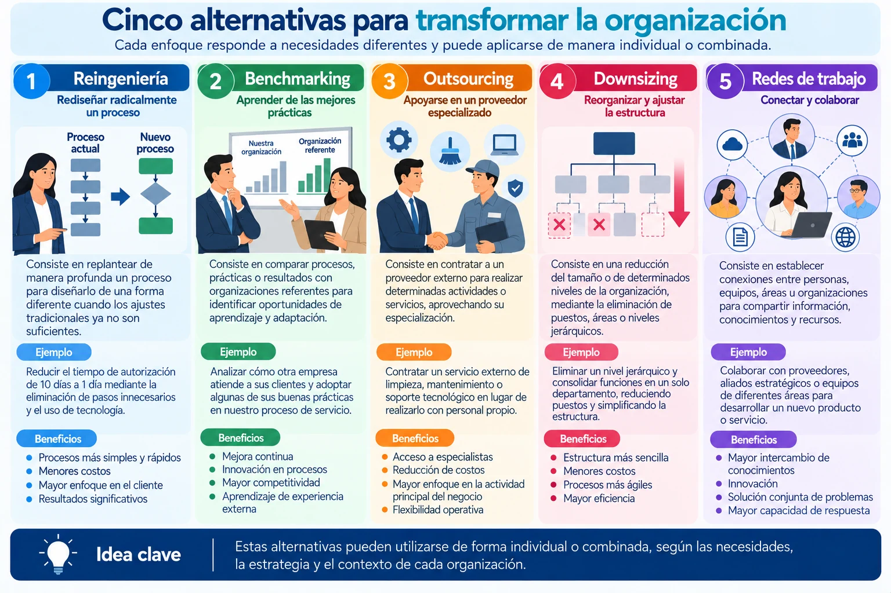
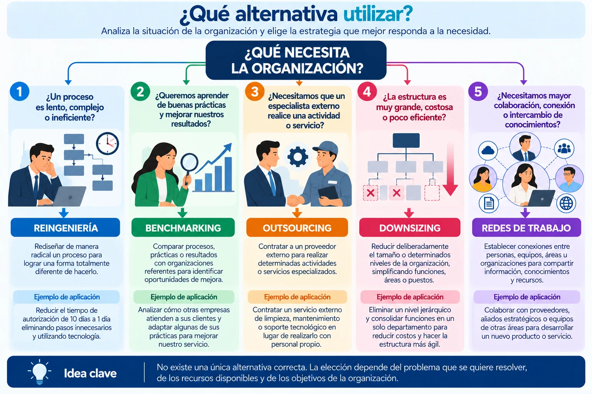
Un recorrido por la Teoría Organizacional
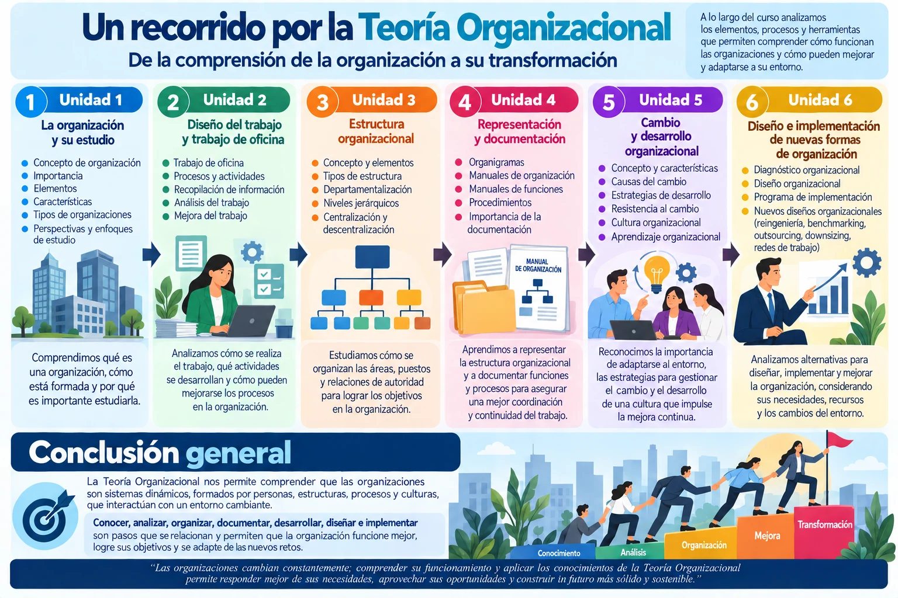